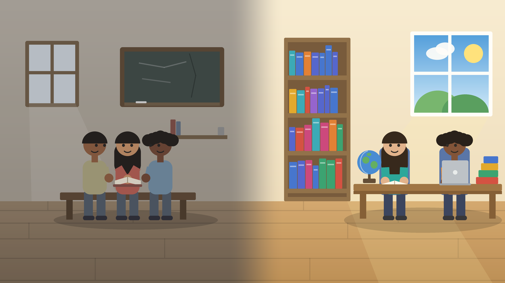
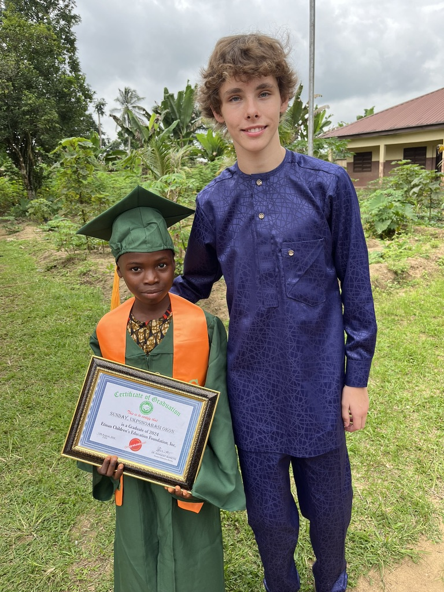

The Bigger Picture
Why This Matters Beyond Etinan
What I saw in that classroom wasn’t unique to one town in Nigeria. It’s part of a much bigger, global problem: millions of kids who are eager to learn simply don’t have access to the resources that make learning possible.

The Scale of the Problem
According to UNESCO’s 2026 Global Education Monitoring Report, the number of children and young people out of school worldwide has now risen for seven straight years, reaching 273 million, or roughly one in six school-age children, adolescents, and youth globally (UNESCO). That exclusion isn’t spread evenly: the Global Partnership for Education reports that out-of-school rates run as high as 36% in low-income countries, compared with just 3% in high-income countries (Global Partnership for Education).
Nigeria carries a disproportionate share of that burden. DevelopmentAid reports that the country is home to more than 20% of the world’s out-of-school children, over 18 million kids between the ages of 5 and 14 who aren’t in a classroom at all (DevelopmentAid). Even among children who are enrolled, that same reporting points to a 2024 UNICEF finding that only about 26% of Nigerian children and adolescents ages 7 to 14 have basic reading and math skills. That gap lines up closely with what I saw firsthand: capable, motivated students who simply hadn’t had the materials or instruction time to catch up.
Why It Happens
The reasons behind these numbers aren’t a mystery. Underfunded schools, teacher shortages, a lack of basic materials, and, in many regions, conflict and instability all compound on top of each other. It’s rarely about whether kids want to learn. It’s almost always about whether the system around them can actually support that.
How This Trip Changed My Direction
Before I went to Etinan, “educational inequality” was a phrase I’d read about in articles. After a month in that classroom, it’s personal. I want to build a career around expanding access to education, whether that’s through teaching, education policy, or nonprofit work, because I’ve seen up close how much of a difference resources, or the lack of them, can make in a kid’s future.

Ways to Get Involved
- Support organizations that fund teacher training, school supplies, and infrastructure in under-resourced regions. The Etinan Children’s Scholarship Foundation works directly in the community I taught in.
- Look into short-term teaching or volunteer placements like the one that sent me to Etinan.
- Share what you learn here. Awareness is the first step toward more people caring about this issue.
- If you’re a student, think about how your own career path could intersect with closing this gap, even outside of a strictly “education” job.
Education changed my life. I got to spend a month watching it change a classroom full of kids in Etinan, and I want to spend a career helping that happen more often, for more kids, everywhere.